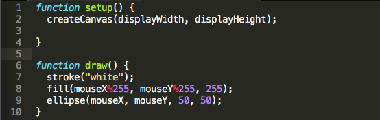

<script src="http://cdnjs.cloudflare.com/ajax/libs/p5.js/0.4.19/p5.js"></script>
3. Open main.js and create a local host for the p5_tutorial folder
python -m SimpleHTTPServer 8080
4. Set up createCanvas() in function setup() {
with parameters
w = displayWidth
h = displayHeight
createCanvas(displayWidth, displayHeight);
5. Draw ellipse() in function draw() {
with parameters
x = 100
y = 100
w = 50
h = 50
ellipse(100, 100, 50, 50);
x, y, w, h
6. Make mouseX and mouseY the x and y parameters of ellipse
ellipse(mouseX, mouseY, 50, 50);
7. fill() the ellipse to blue using R, G, B integer values
note: the highest values for R, G, B is 255
hint: put your fill(r, g, b) code before your ellipse(x, y, w, h) code
fill(0, 0, 255);
R, G, B
8. Make mouseX and mouseY the R and G parameters of fill
note: the highest values for R, G, B is 255
hint: %255 will turn any value to be in the range of [0, 255]
fill(mouseX%255, mouseY%255, 255);
9. Final Code

See How it is like? Move your mouse!